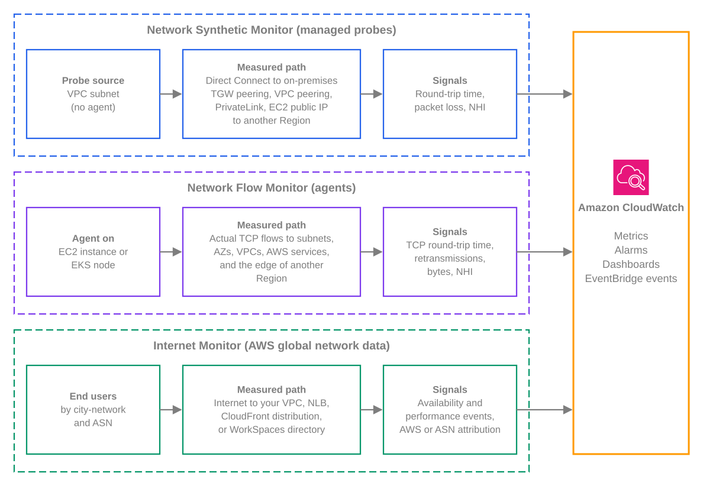

Network Performance Monitoring¶
Prerequisites
This section assumes familiarity with AWS Services Monitoring, Connectivity Within AWS, and Hybrid & Multi-Cloud. Review those topics first if you're new to AWS networking fundamentals.
Amazon CloudWatch Network Monitoring measures network-path performance with 3 products: Amazon CloudWatch Network Synthetic Monitor (managed probes), Network Flow Monitor (agents on your workloads), and Internet Monitor (AWS global network data). Each product observes the network from a different vantage point, and the question they answer together is one that flow logs and service metrics cannot: is the degradation on this path inside the AWS network, or in a segment you own?
Flow logs record what traversed the network, and service metrics report whether a networking service is healthy. Neither tells you whether the AWS-controlled part of a path between two endpoints is degrading. Network Synthetic Monitor and Network Flow Monitor publish a network health indicator (NHI) for that purpose: a binary value that reports whether AWS network degradation was observed. Internet Monitor reports the same kind of attribution for internet-facing traffic, naming either the AWS network or a specific internet service provider network. Network Synthetic Monitor publishes the NHI for AWS Direct Connect paths and for 4 inter-Region path types: AWS Transit Gateway inter-Region peering, inter-Region VPC peering, AWS PrivateLink, and Amazon EC2 public IP paths.
This page is organized by observation model. It starts with how to choose between the 3 products, then covers how to read the NHI correctly (including what it does not cover), and then the design decisions that apply to all of them: where to deploy monitors in a multi-account organization, how to handle IPv6, how to alarm without creating noise, and what drives cost.

Network performance monitoring products — Drawio Source
Key capabilities¶
-
Network Synthetic Monitor
Managed ICMP or TCP probes from a VPC subnet to a destination IP address, with no agent to install. Publishes round-trip time, packet loss, and an NHI for AWS Direct Connect paths and for inter-Region paths. Supports IPv4 and IPv6 destinations.
-
Network Flow Monitor
Lightweight agents on Amazon EC2 instances and Amazon EKS nodes report TCP round-trip time, retransmissions, retransmission timeouts, and bytes transferred for your real workload flows. Each monitor publishes an NHI.
-
Internet Monitor
Uses connectivity data from the AWS global network to baseline internet performance and availability between your end users and your VPCs, Network Load Balancers, Amazon CloudFront distributions, or Amazon WorkSpaces directories. A monitor combines VPCs with CloudFront distributions, while NLBs and WorkSpaces directories each need a monitor of their own. Names the AWS network or a specific ASN when it can attribute an event.
-
Network health indicator
A binary signal that reports whether AWS network degradation was observed. It attributes an impairment to AWS or to your side. It does not report round-trip time or packet loss.
-
CloudWatch integration
All 3 products publish to CloudWatch, so alarms, composite alarms, and dashboards work the same way as for other networking metrics. Internet Monitor also publishes health events to Amazon EventBridge.
-
Multi-account scope
Network Synthetic Monitor runs in the account that owns the monitored subnet. Network Flow Monitor can span multiple accounts through AWS Organizations. Central visibility comes from CloudWatch cross-account observability.
Choosing a product¶
The 3 products are not interchangeable. They differ in what they observe (synthetic probes, real flows, or end-user traffic), what you must deploy, and where their coverage ends. Pick by the question you need answered.
| Dimension | Network Synthetic Monitor | Network Flow Monitor | Internet Monitor |
|---|---|---|---|
| Observation model | Active probes (ICMP or TCP) generated by AWS | Passive TCP statistics from agents on your instances | Passive baseline from AWS global network data |
| What you deploy | A monitor with a source subnet and destination IP addresses | An agent on each EC2 instance or EKS node you want covered | A monitor that lists your VPCs and Amazon CloudFront distributions, or only NLBs, or only Amazon WorkSpaces directories |
| Traffic measured | Synthetic probe traffic along the path you configure | Your actual workload flows | Your end users' internet traffic |
| Path coverage | Direct Connect to on-premises, and inter-Region paths | Flows to subnets, Availability Zones, VPCs, AWS services, and up to the edge of another Region | Internet path between end users and your AWS application |
| Attribution signal | NHI | NHI per monitor | Health events naming the AWS network or an ASN |
| Metrics published | Round-trip time, packet loss, NHI | TCP round-trip time, retransmissions, retransmission timeouts, bytes, NHI | Availability and performance metrics, health events |
| Main gap | Measures what probes see, not what your workload sees | Linux compute only, and TCP only | No on-premises or private-path coverage |
| Question | Use | Why |
|---|---|---|
| "Is the latency or loss on my Direct Connect path caused by AWS?" | Network Synthetic Monitor | Probes run continuously with no agent, and NHI reports AWS-side degradation on the path to the Direct Connect location |
| "Is the degradation between my two Regions caused by the AWS network?" | Network Synthetic Monitor | NHI covers Transit Gateway inter-Region peering, inter-Region VPC peering, PrivateLink, and EC2 public IP paths |
| "Are my application's real TCP connections retransmitting, and is AWS the cause?" | Network Flow Monitor | Agents measure real flows and rank top contributors, and the monitor NHI reports AWS-side impairment |
| "Which Availability Zone pair or AWS service has the worst retransmission rate?" | Network Flow Monitor | Metrics are aggregated by subnet, Availability Zone, VPC, and AWS service |
| "Are my users in one country or ISP having a bad experience?" | Internet Monitor | Health events are scoped to city-network and ASN, with AWS or ISP attribution |
| "What traversed the network, and was it accepted?" | Flow logs, not this page | None of these products record packets or accept/reject decisions. See Internal Traffic Monitoring |
Key insight: Choose the product by what you can observe and who controls the endpoints. Probes need a destination IP address that you control or can reach. Agents need compute you manage. Internet Monitor needs only the application resources.
Network health indicator¶
The NHI is a binary value. A value of 100 means degradation was observed within the AWS-controlled part of the path. A value of 0 means no AWS-side degradation was observed. For Network Synthetic Monitor, AWS derives it with anomaly detection and statistical correlation across AWS sample datasets and the monitor's own packet loss and round-trip time measurements, so it is a probabilistic attribution and not a guarantee. The console shows Network Flow Monitor values as Healthy or Degraded.
Network Synthetic Monitor defines the NHI scope differently for each path type. The scope is the most common source of incorrect assumptions, because "the NHI is healthy" never means "the whole path is healthy."
| Path type | What the NHI covers | What it does not cover |
|---|---|---|
| AWS Direct Connect | AWS-controlled path from the monitored resource to the Direct Connect location | Anything beyond the AWS Direct Connect endpoint, such as your router and on-premises network |
| AWS Transit Gateway inter-Region peering | AWS network path up to the Transit Gateway peering connection | The remote Region's attachments, VPC, and workloads. The documentation does not state how the NHI treats the path between the two transit gateways, so do not assume it is in or out of scope |
| Inter-Region VPC peering | AWS network path from the monitored subnet to the destination Region | Anything inside the destination VPC. Peering within the same Region is not an inter-Region path |
| AWS PrivateLink to an endpoint service in another Region | AWS network path from the monitored subnet to the destination Region | The endpoint service itself |
| Amazon EC2 public IP address in another Region, through an internet gateway | AWS network path from the monitored subnet to the destination Region | The destination instance and its security controls |
Four behaviors change how you build alarms on the NHI:
- Warm-up delay. After you create a monitor, add a probe, or re-activate a probe, the NHI is delayed by a few hours while AWS collects data for anomaly detection. An NHI of 0 during that window does not mean the path is healthy.
- Cloud WAN intermediary routing. The NHI is not accurate for Direct Connect attachments that use intermediary routing with AWS Cloud WAN. In a hybrid network that includes Cloud WAN, do not use the NHI as an indication of a performance issue on those paths.
- Monitor-level aggregation in Network Flow Monitor. A Degraded value means at least one flow tracked by the monitor had an AWS network issue during the selected period. Scope each monitor to one workload or one flow group, or a single impaired flow will mark the whole monitor Degraded.
- No automatic failover. Network Synthetic Monitor detects and attributes problems but does not reroute traffic. Remediation is your design.
Key insight: NHI 100 says "AWS is involved." NHI 0 with rising round-trip time or packet loss says "look at your own segments." Treat the two signals together, never the NHI alone.
Best Practices¶
Product selection¶
Use Network Synthetic Monitor for hybrid and inter-Region paths¶
Network Synthetic Monitor is managed by AWS and needs no agent on monitored resources, so it covers paths where you cannot or do not want to install software: Direct Connect links to on-premises destinations and paths to another Region. You supply a VPC subnet and a destination IP address. This is the only one of the 3 products that actively exercises a path when no application traffic is present, which makes it the right choice for standby paths such as a backup Direct Connect connection or a disaster recovery Region that otherwise carries little traffic.
Do not use it to measure application behavior. A probe measures what probes see, and a path can respond to ICMP or TCP SYN probes normally while a specific application flow suffers from a different problem.
Use Network Flow Monitor for real workload flows¶
Network Flow Monitor reports on the traffic your applications actually generate, so it detects problems that affect real TCP connections but not synthetic probes. It requires an agent on every Amazon EC2 instance or Amazon EKS node you want covered. It observes TCP only, round-trip time data can be sparse because it is not always calculated, and a remote Region is measured only up to the edge of that Region and not to a specific endpoint within it.
Use the workload insights view to find the flows with the highest retransmissions or retransmission timeouts, then create monitors for those workloads. Starting from a monitor for everything produces one Degraded signal that no one can act on.
Use Internet Monitor for the user-facing edge¶
Internet Monitor answers a different question from the other two: whether users on a specific city-network are affected, and whether the AWS network or an ASN is responsible. It has no view of private paths, Direct Connect, or on-premises destinations. Use it alongside external traffic monitoring, which captures what each request experienced, and not as a replacement for access logs.
Key insight: Run two products together on critical paths. Network Synthetic Monitor shows whether the path is healthy when idle, and Network Flow Monitor shows whether your real flows are suffering. Disagreement between them points to the application or the host, not the network.
Inter-Region paths over Transit Gateway¶
Place a monitor in every Region that originates critical traffic¶
A Network Synthetic Monitor probe runs from a source subnet toward a destination in the peered Region. For Transit Gateway peering, its NHI covers only the local Region's AWS path from that source up to the peering connection. A single monitor therefore never gives AWS-side attribution for the remote Region's half of the path, whatever the traffic pattern. Deploy a monitor in each Region, with the other Region's destination as its probe target, so that each half of the path has its own NHI. A monitor measures only from its own source subnet toward its destination.
Use one source subnet per Availability Zone for workloads that span zones. Network Synthetic Monitor can monitor the routes from each private subnet, and the path can differ per zone, so a subnet in one zone does not necessarily represent the others. The cost scales with the number of subnets and destinations, so choose representative subnets and destinations and not every subnet.
Pair the NHI with Transit Gateway metrics and flow logs¶
The NHI stops at the peering connection. When the NHI is 0 and the path is degraded, the cause is on a segment the NHI does not cover: a blackhole or missing route on either Transit Gateway, an attachment on the remote side, or the destination itself. Check the Transit Gateway packet drop metrics in AWS Services Monitoring and the cross-Region traffic in Transit Gateway Flow Logs. Use the NHI to rule AWS in or out, and use those sources to find the cause.
Choose probe destinations that respond reliably¶
A probe that fails because a security group, network ACL, or firewall drops it produces packet loss that looks like a network problem. Pick a stable destination IP address that you control and that always answers the probe protocol. Allow the full TCP source port range that the probes rotate through when you use TCP probes. Do not use reserved or AWS-internal addresses, such as link-local addresses (including the instance metadata address) or 10.0.0.2, as destinations: the probe traffic never leaves the AWS data center, so round-trip time reads artificially low.
Probes on inter-Region paths send more traffic than probes on other paths to cover additional network paths, so treat them as steady background load on the peering connection and the destination host. Probes also use managed elastic network interfaces in the monitored subnet. Include them in subnet IP planning and in the rules that govern the subnet.
Key insight: An NHI on a Transit Gateway inter-Region path answers "was the AWS network between my subnet and the peering connection impaired?" It does not answer "is everything between my two workloads healthy?"
Alarming on attribution¶
Combine the NHI with packet loss and round-trip time¶
An NHI alarm alone tells you AWS may be involved but not whether your users are affected. A packet loss or round-trip time alarm alone does not tell you who owns the problem. Use a composite alarm that requires both, and route the two outcomes differently:
| Packet loss or round-trip time | NHI | Interpretation | Response |
|---|---|---|---|
| Degraded | 100 | AWS network impairment affecting your path | Decide on failover through your runbook if a redundant path exists, then open an AWS Support case with the monitor evidence |
| Degraded | 0 | Impairment outside the AWS-controlled segment | Investigate your routers, on-premises network, remote Region, or application |
| Normal | 100 | Possible AWS event with no measurable impact yet | Notify at low severity and watch the trend. A composite alarm that requires both signals cannot fire in this state, so this row needs its own alarm on the NHI alone |
| Normal | 0 | Healthy | No action |
This also reduces alert fatigue: an NHI alarm that pages on every transient AWS-side anomaly without measurable impact trains the team to ignore it. See Notifications for severity tiers and routing.
Set the missing-data treatment on these alarms explicitly. The NHI has no data during the warm-up after you create a monitor or add or re-activate a probe. With the missing treatment, the alarm moves to INSUFFICIENT_DATA, which is the accurate state for a path nobody has measured yet. With notBreaching, the alarm reports OK, which reads as healthy. Use missing, and show INSUFFICIENT_DATA after a monitor change as "warming up" on dashboards and not as a page.
Treat the NHI as evidence, not as a trigger for automatic failover¶
The NHI is a statistical attribution. Acting on it automatically can shift traffic away from a healthy path during a false positive, and shifting load to a backup path can create the congestion you were trying to avoid. Use the NHI to drive notifications and a runbook decision. Network Synthetic Monitor does not perform failover for you, and you should not build failover on the NHI or on probe metrics where a routing protocol already decides the path. For Direct Connect, BGP does the failover, with BFD for fast detection and the AS_PATH and local preference design determining where traffic moves. Monitoring informs the runbook and routing does the failover, because Lambda-driven failover on a probe metric competes with the routing protocol and can flap. See Hybrid & Multi-Cloud for the failover design.
Multi-account deployment¶
Deploy monitors in the account that owns the monitored subnet¶
A Network Synthetic Monitor must be created in the same account that owns the monitored subnets. In a shared VPC model, the subnet owner is the VPC owner account, not the participant. Plan for monitors to live in workload accounts or in the account that owns the shared VPC, and not only in a central networking account.
Roll out monitors with infrastructure as code so that every account and Region gets the same probe set, and use CloudWatch cross-account observability to aggregate the NHI, packet loss, and round-trip time metrics into the monitoring account described in AWS Services Monitoring. Network Flow Monitor can scope across accounts when you configure it with AWS Organizations, so one view covers workload accounts.
Keep ownership of alarms with the team that owns the path¶
The Transit Gateway or Direct Connect path owner should receive NHI and path-loss alarms, not the workload team. Because monitors live in workload accounts or in the account that owns the shared VPC, the path owner does not see their metrics natively. Share the NHI, packet loss, and round-trip time metrics from the source accounts to the monitoring account through CloudWatch cross-account observability, and define the path owner's alarms in that monitoring account. Workload teams define the Network Flow Monitor alarms for their flows in their own accounts. Send both to the same incident channel, so the attribution is visible when the two teams talk.
IPv6 considerations¶
Monitor IPv4 and IPv6 paths separately¶
An IPv4 path that is healthy does not imply that the IPv6 path is. Security groups, network ACLs, routes, and BGP advertisements differ per address family. Network Synthetic Monitor supports IPv4 and IPv6 destinations from dual-stack VPCs, but a single monitor cannot mix both address families, so create one monitor per family for each critical path. Treat missing IPv6 coverage as a gap, because dual-stack workloads can fail on the IPv6 path while IPv4 metrics stay green.
Cost optimization¶
Understand what each product charges for¶
Pricing varies by Region and changes, so use the dimensions below and the CloudWatch pricing page for current values.
| Product | Pricing dimensions | What drives the bill |
|---|---|---|
| Network Synthetic Monitor | Monitored resources per hour (source subnets and the destinations monitored from each), plus CloudWatch metrics for each probe. For inter-Region probes, data charges on the probe traffic: Transit Gateway data processing and inter-Region data transfer | Number of subnets multiplied by number of destination IP addresses, and for inter-Region paths the continuous probe traffic |
| Network Flow Monitor | Monitored resources per hour (each agent on an instance or node), plus CloudWatch metrics | Number of instances or nodes running the agent |
| Internet Monitor | Monitored resources per hour, monitored city-networks per hour, plus CloudWatch Logs for diagnostic logs | Number of city-networks monitored, which grows with your user base and which you cap with the traffic percentage and the city-networks maximum |
Probes on inter-Region paths run continuously and send more traffic than probes on other paths, so their traffic incurs the same data charges as workload traffic on that path, such as Transit Gateway data processing and inter-Region data transfer (see Transit Gateway pricing). Each added probe raises that baseline even when no workload is running.
CloudWatch alarm, dashboard, and metric charges apply on top of all 3. Use the same metric math and composite alarm techniques to limit alarm count.
Scope coverage to critical paths¶
Probing every subnet against every destination multiplies cost without adding signal. Start with one subnet per Availability Zone on each business-critical path. For Network Flow Monitor, install agents on the workloads that appear at the top of the workload insights view first, and expand from there. For Internet Monitor, use the two coverage controls: the traffic percentage and the city-networks maximum. The percentage determines how many city-networks are monitored, and the maximum caps that count and takes precedence over the percentage, which makes the bill predictable. Both create a gap: for traffic you do not monitor, Internet Monitor raises no health events, so an event that affects those users is invisible to you. Choose the maximum from the city-networks needed for your target coverage, and accept the gap deliberately for low-value traffic.
Key insight: Cost scales with the number of vantage points. For Network Synthetic Monitor on inter-Region paths it also scales with the probe traffic crossing the path, which is billed like workload traffic. Pick the smallest set of vantage points that can distinguish AWS from your own network on each critical path.
When to use each product¶
Network Synthetic Monitor is the right choice when:
- You need to know whether degradation on a Direct Connect or inter-Region path is inside the AWS network
- The path carries little or no steady traffic, such as a standby Direct Connect connection or a disaster recovery Region
- You cannot install agents on the endpoints or the destination is outside AWS
Network Synthetic Monitor is not the right choice when:
- You need to measure real application flows (use Network Flow Monitor)
- You need to know what was transmitted or accepted by security controls (use flow logs)
- You need to measure internet user experience (use Internet Monitor)
- The path crosses a Cloud WAN core network, or is a Direct Connect attachment that uses Cloud WAN intermediary routing. Cloud WAN core network paths are not an NHI path type, and the NHI is not accurate for that Direct Connect case, so do not rely on the NHI for attribution there
Network Flow Monitor is the right choice when:
- You can install agents on Linux compute, and you need to measure actual TCP flows
- You need to rank flows by retransmissions to find the worst contributors
- You want attribution on the flows your application depends on, scoped per workload
Network Flow Monitor is not the right choice when:
- The workload runs on compute where you cannot install agents (use Network Synthetic Monitor)
- The traffic is not TCP
- You need to inspect specific endpoints within another Region, because measurement stops at the edge of the Region
Internet Monitor is the right choice when:
- Your application serves internet users, and you need to know which cities and ISPs are affected
- You need attribution between the AWS network and an ISP network
Internet Monitor is not the right choice when:
- The path is private, such as Direct Connect, VPN, or Transit Gateway (use Network Synthetic Monitor or Network Flow Monitor)
- You need per-request detail (use CloudFront and load balancer access logs)
Combining network performance monitoring with other services¶
| Combination | Network performance monitoring provides | Other service provides |
|---|---|---|
| Network Synthetic Monitor + Transit Gateway metrics | AWS-side attribution up to the peering connection, plus round-trip time and packet loss | Drop counters and attachment health that locate the cause on segments the NHI does not cover |
| Network Synthetic Monitor + Direct Connect metrics | End-to-end path measurement and AWS-side attribution to the Direct Connect location | Connection state, BGP session state, and light levels for the physical and routing layers |
| Network Flow Monitor + VPC Flow Logs | Retransmission and round-trip time statistics per flow group, with AWS attribution | Per-flow records of source, destination, and accept/reject decisions |
| Internet Monitor + CloudFront and load balancer logs | City-network and ASN health events with AWS or ISP attribution | Per-request latency, status codes, and client details |
| NHI + CloudWatch composite alarms | The attribution signal | Boolean logic that requires measurable impact before paging |
| Network performance monitoring + AWS Health Dashboard | Impact on your specific paths, measured from your subnets. When Internet Monitor finds that the AWS network is the cause of an overall issue, it also sends an AWS Health Dashboard notification with the mitigation steps AWS is taking | AWS-declared service events and maintenance notices |
| Network performance monitoring + Notifications | Metrics and health events that indicate impairment | Routing, severity tiers, and escalation (see Notifications) |
Adoption guidance¶
New environments. Deploy Network Synthetic Monitor probes on every Direct Connect and inter-Region path before the first production workload uses it, so you have a baseline when the first incident happens. Plan the account and subnet placement of monitors in your landing zone, and include the managed network interfaces in subnet sizing. Add Network Flow Monitor agents to your base images for workloads that depend on cross-Availability Zone or cross-Region traffic. Create Internet Monitor monitors for internet-facing applications at launch.
Existing environments. Start with the paths that have had unexplained incidents. Add one Network Synthetic Monitor per critical hybrid or inter-Region path, with one source subnet per Availability Zone, and create the composite alarm that pairs the NHI with packet loss. Add agents for Network Flow Monitor to the workloads that appear at the top of workload insights. Confirm that the Region where you deploy each product is supported before you design around it.
Documentation¶
-
Network Synthetic Monitor
Probes, monitors, requirements, and how the network health indicator works for Direct Connect and inter-Region path types.
-
Network Flow Monitor
Agents, scope, workload insights, monitors, and the network health indicator for TCP flows on Amazon EC2 and Amazon EKS.
-
Internet Monitor
How Internet Monitor baselines internet performance and attributes health events to the AWS network or an ASN.
-
Network Synthetic Monitor Regions
Current Region availability for Network Synthetic Monitor. Check it before you design a deployment.
-
Transit Gateway peering attachments
How Transit Gateway inter-Region peering works. This is one of the inter-Region path types the NHI covers.
-
CloudWatch pricing
Pricing dimensions for flow monitoring, internet monitoring, and synthetic monitoring under CloudWatch Network Monitoring.
Related Observability Pages¶
- Internal Traffic Monitoring — Flow logs show what traversed the network. Network performance monitoring shows whether the AWS network was the cause of a degradation on the path.
- External Traffic Monitoring — Access logs capture each request. Internet Monitor adds city-network and ASN health events for the same users.
- AWS Services Monitoring — Service metrics report resource health, and the metrics and alarms for Transit Gateway and Direct Connect help you find the cause when the NHI points elsewhere.
- Notifications — Routes NHI, packet loss, and health-event alarms to the team that owns the response.
Relationship to Foundation:
- Subnets: Network Synthetic Monitor probes use managed network interfaces in the monitored subnet, so subnet sizing and rules must account for them.
- AWS Organizations: Account structure determines where monitors run and how Network Flow Monitor scope and cross-account observability are configured.
Relationship to Connectivity:
- Connectivity Within AWS: Covers Transit Gateway peering and Cloud WAN. The NHI covers Transit Gateway inter-Region peering paths, but Cloud WAN core network paths are not one of its path types.
- Hybrid & Multi-Cloud: Covers Direct Connect design, including the failure-state capacity and redundancy that NHI-driven runbooks depend on.